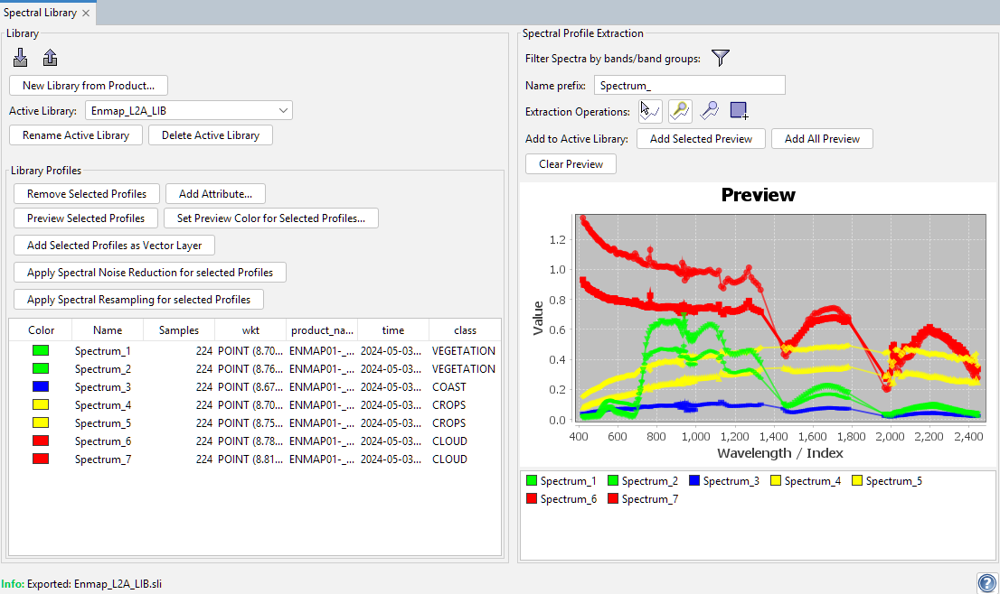
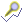
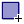

The Spectral Library Tool lets you extract spectral profiles from products (cursor / pins / geometries), preview them, and store them in spectral libraries for later reuse.
Selecting "Spectral Library" from the View --> Tool Windows menu opens the tool window.

The tool window is split into two main areas:
-
Library - manages spectral libraries and stored profiles (add/remove/rename, attributes, import/export).
-
Spectral Profile Extraction - extracts and previews spectral profiles
(cursor/pins/geometry) and can add them to the active library.
Workflow
The Spectral Library Tool is designed around the concept of an active spectral library.
The active library defines the wavelength axis (band set) used for preview and for storing spectral profiles.
-
Create or import a library
Start by either importing an existing library from file,
or creating a new one from an open product. Creating a library from a product initializes the library
axis from the product's spectral bands.
-
Select the active library
Use the library combo box to switch between libraries currently
held in memory. The selected library becomes the active library and is used as target for profile
storage and preview.
-
Manage stored profiles
All profiles contained in the active library are listed in
the profiles table. Selected entries can be removed from the active library and
can be previewed in the chart.
-
Create a vector layer from stored profile coordinates
Select one or more profiles in the table and use Add Selected Profiles as Vector Layer to create a
vector layer in the currently selected product. Only profiles with a wkt attribute are used; profiles
without valid wkt are skipped. The resulting vector layer can be used as input geometry,
e.g. in supervised classification operators.
-
Configure extraction (requires an open Product Scene View)
To configure band filters
and to perform extraction operations, a Product Scene View must be open so the tool can derive the
available spectral bands and read pixel spectra.
-
Optional: Set a name prefix for new profiles
Use the Name prefix field in the
extraction header to control how newly extracted profiles are named (e.g. Soil_, Water_).
The tool ensures uniqueness by appending indices where needed.
-
Filter the band set
You can limit extraction and display to
band groups or to individual bands.
-
Extract spectral profiles
Spectra can be extracted by:
-
Cursor click in the Product Scene View
-
Pins (selected pins or all pins)
-
Selected geometry (extract spectra for all pixels covered by the selected geometry)
Extracted profiles appear in the preview chart.
When extracting profiles you can directly assign custom attributes (see below).
-
Preview and store results
You can add all extracted profiles to the active
library, or add only the selected preview profile.
Note: For performance reasons,
the preview chart may show only a limited subset when very large numbers of profiles are extracted
(e.g. thousands to hundreds of thousands). Adding to the library still uses the full extraction result.
Custom Attributes
Spectral profiles may carry additional metadata beyond name and spectrum values. The tool
supports custom attributes that can be defined per library and shown as additional columns
in the profiles table.
-
Define attributes - Add new attributes to the active library
(e.g. material name, class, site, instrument setup). Attributes can use different
data types (e.g. strings, numbers, booleans, ...) and may provide default values.
-
Edit values - Attribute values are editable directly in the profiles table for each stored profile.
-
Attach attributes on add - When adding preview profiles to a library, the tool can
ask for additional attributes to attach.
-
Automatic extraction metadata - Extracted profiles may automatically include basic metadata such as:
-
wkt (point geometry for the pixel)
Profiles containing a wkt attribute can be transferred to the currently
selected product as a vector layer via Add Selected Profiles as Vector Layer.
This is useful when stored sample locations shall be reused in downstream processing,
e.g. supervised classification operators.
-
product_name (source product name)
-
time (product start time, if available)
Profile Colors
Each profile can have a preview color which is used consistently in the preview chart and shown in the first table column:
-
Color column - the profiles table shows the preview color as a small color swatch.
-
Set Preview Color for Selected Profiles... - select one or multiple profiles in the table and set their preview color.
-
Extraction colors - newly extracted profiles get a default color (e.g. pin color for pin extraction).
-
Persistence - preview colors are UI settings (not stored as library attributes in the spectral library file format).
File Formats
Libraries can be imported and exported in the following formats.
-
ENVI Spectral Library (*.sli / *.hdr) - A widely used binary format where spectra
are stored as rows sharing a common wavelength axis. Custom attributes are stored in an
accompanying CSV sidecar file.
-
GeoJSON (*.geojson) - A text-based format compatible with the EnMAP-Box spectral
library GeoJSON format. Each profile is stored as a GeoJSON Feature, including spectral
data, bad band information, custom attributes, and optional point geometry.
-
Spectral Library CSV (*.csv) - A tabular text format compatible with the EcoSIS
(Ecological Spectral Information System) convention. Wavelengths are stored as numeric
column headers; non-numeric columns are treated as metadata attributes. Both
By-Row and By-Column orientations can be imported; export is always By-Row.
Tool Buttons
In the following the main tool buttons are explained.
|
Import new library from file. |
|
Export active library to file. |
|
Refresh active library and profiles table. |
|
Configure bands/band group selection for spectra retrieval. |
|
Extract spectral profile through a cursor click in Product Scene View. |
 |
Extract spectral profile for selected pins. |
|
Extract spectral profiles for all pins. |
 |
Extract spectral profiles for all pixels within the selected geometry. |
|
Displays this help page. |